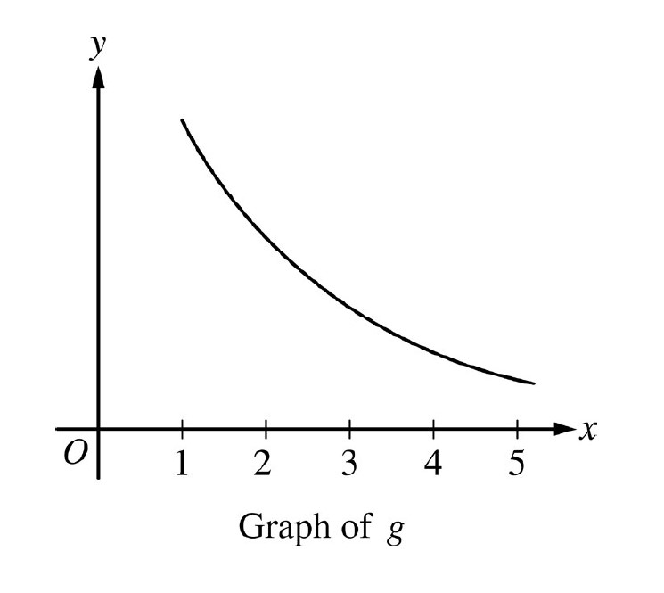

For \(x\geq 1\), the continuous function \(g\) is decreasing and positive. A portion of the graph of \(g\) is shown above. For \(n\geq1\), the \(n\)th term of the series \(\displaystyle \sum_{n=1}^\infty a_n\) is defined by \(a_n=g(n)\). If \(\displaystyle \int\limits_1^\infty g(x) dx\) converges to 8, which of the following could be true?